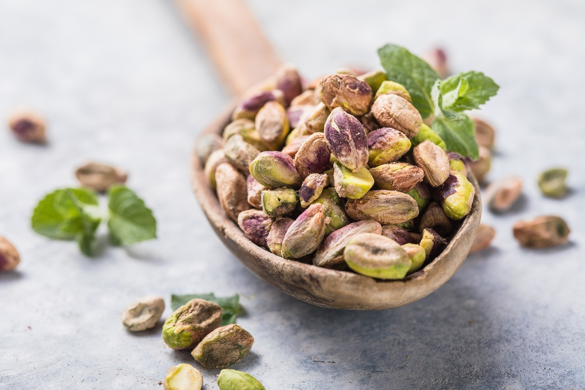
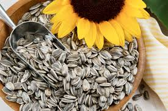
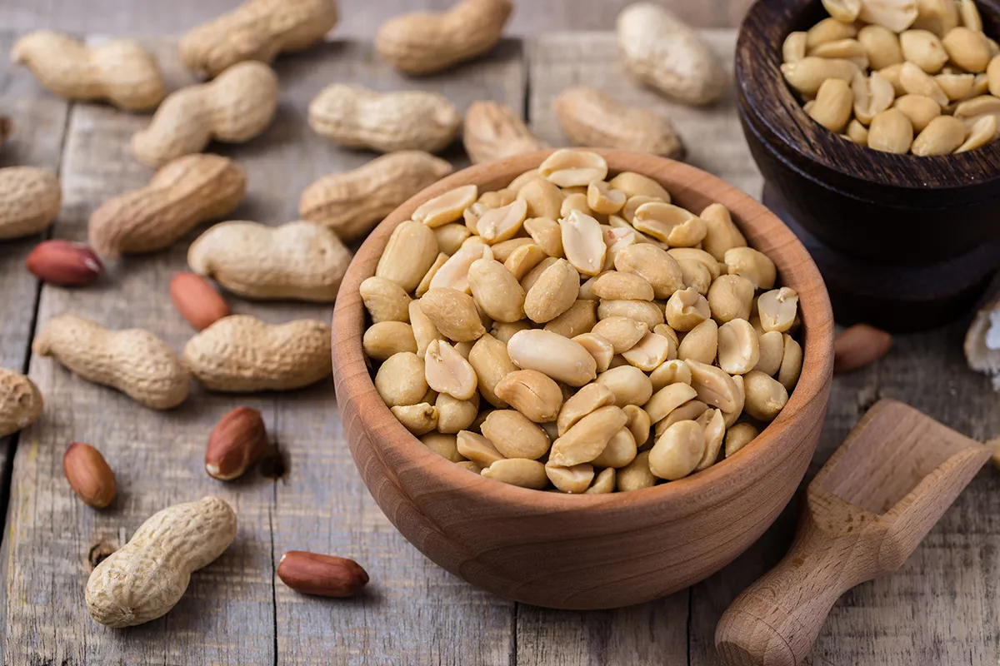

Le nostre offerte estive!!!

Acquista 17.80€/Kg
Pistacchi
Si tratta dei semi oleosi contenuti nel frutto (drupa) del
pistacchio, un alberello alto fino ad una decina di metri con chioma alta e fitta,
appartenente alla Famiglia botanica Anacardiaceae, Genere Pistacia e specie vera.
In porzioni e con frequenza di consumo adeguate, i pistacchi si prestano alla
maggior parte dei regimi alimentari. Avendo un elevatissimo potere calorico, meglio
evitarli – o consumarli sporadicamente – in caso di obesità – soprattutto
all'interno dei pasti principali.
| Pistacchi, valori per 100g | |
|---|---|
| Energia | 562kcal |
| Fibre | 10,3g |
| Carboidrati | 27,51g |
| Grassi | 45,39g |
| Proteine | 20,27g |
| Acqua | 0g |
Acquista 17.80€/Kg

Acquista 2,65/kg
Semi di girasole
I semi di girasole sono alimenti di origine vegetale ricchi
di grassi (insaturi) e quindi di calorie; figurano nell'insieme della frutta secca o
semi oleosi – non propriamente inquadrati nei VII gruppi fondamentali degli
alimenti.
Nel linguaggio comune, il termine "semi di girasole" si riferisce ai frutti
dell'omonima pianta (nome botanico Helianthus annus, fam. Composite o Asteraceae).
Più precisamente, si tratta di acheni, frutti secchi indeiscenti contenenti un
singolo seme (che non liberano a maturazione, da cui "indeiscenti") adeso in un solo
punto al pericarpo più o meno indurito (crostaceo nel caso dei semi di girasole).
| Semi di girasole, valori per 100g | |
|---|---|
| Energia | 584kcal |
| Fibre | 8,60g |
| Carboidrati | 20g |
| Grassi | 51,46g |
| Proteine | 20,78g |
| Acqua | 4,7g |
Acquista 2,65/kg

Acquista 5,60€/kg
Arachidi
L'arachide è una pianta erbosa appartenente alla famiglia
delle Fabaceae (o leguminose), originaria del Brasile e coltivata un po' in tutto il
mondo. I semi commestibili di questa pianta sono oggetto di un'intensa attività
agricola ed industriale.
In America le arachidi vengono consumate soprattutto sotto forma di una preparazione
burrosa chiamata peanuts butter (burro di arachidi). Questo alimento è poco diffuso
in Europa dove si consumano prevalentemente semi di arachide tostati. In commercio
sono presente sia i baccelli legnosi tostati che preparazioni sgusciate, salate ed
eventualmente tritate.
| Arachidi, valori per 100g | |
|---|---|
| Energia | 594kcal |
| Fibre | 10,90g |
| Carboidrati | 25g |
| Grassi | 51g |
| Proteine | 17g |
| Acqua | 2,30g |
Acquista 5,60€/kg